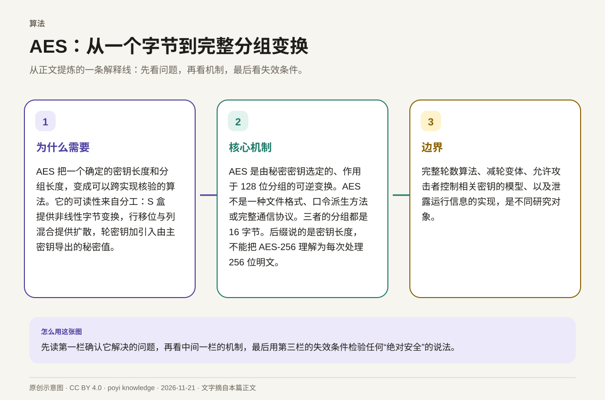
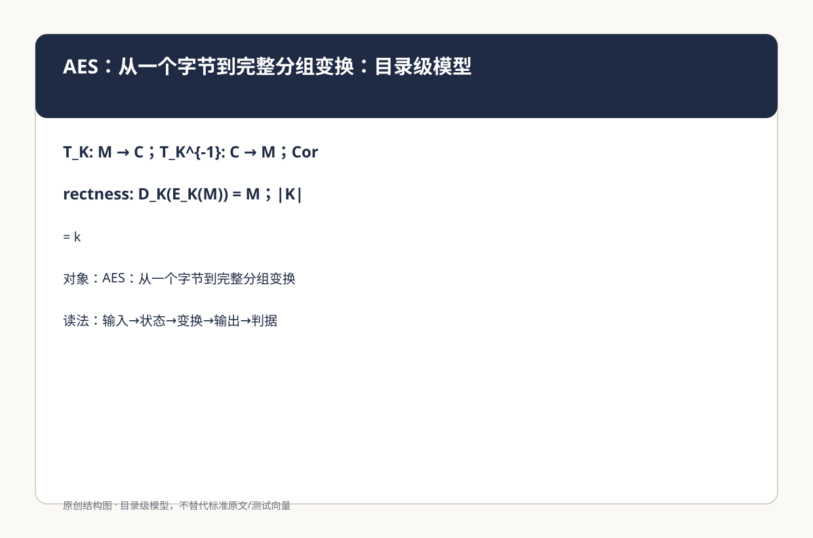

原理与机制
算法：AES 高级加密标准（Advanced Encryption Standard）。AES 是由秘密密钥选定的、作用于 128 位分组的可逆变换。这里详解目录中的算法实体 algorithm--aes；FIPS 197 是定义算法的标准文件，是关联标准，不是同一个实体。AES 不是一种文件格式、口令派生方法或完整通信协议。| 变体 | 密钥字节 | Nk（32位字数） | Nr（轮数） | 轮密钥组数 | 扩展字数 |
| --- | --- | --- | --- | --- | --- |
| AES-128 | 16 | 4 | 10 | 11 | 44 |
| AES-192 | 24 | 6 | 12 | 13 | 52 |
| AES-256 | 32 | 8 | 14 | 15 | 60 |
三者的分组都是 16 字节。后缀说的是密钥长度，不能把 AES-256 理解为每次处理 256 位明文。以下字节数、轮数与算法顺序依据 FIPS 197-upd1；算术推导和程序是该条目的教学实现。### 先把字节放对：列主序状态
输入字节记作 b[0]…b[15]，状态索引规定为 s[r,c]=b[r+4c]。也就是先填满一列，再填下一列。以 000102030405060708090a0b0c0d0e0f 为输入：
c0 c1 c2 c3
row0 00 04 08 0c
row1 01 05 09 0d
row2 02 06 0a 0e
row3 03 07 0b 0f
输出按相同顺序取出：第一列、第二列、第三列、第四列。这里每个两位十六进制数是一个字节，不能把四行连续拼接当作标准输入顺序。状态的行与列是算法索引，不随电脑大端或小端习惯自动改变。### 字节算术：不是普通整数乘法
一个字节代表 GF(2⁸) 中的元素。位 b7…b0 对应多项式 b7·x⁷+…+b1·x+b0。系数只有 0 和 1；加减都是逐位异或。因此 57 XOR 83 = d4，不是十进制相加后取余。乘法先做无进位多项式乘法，再按 m(x)=x⁸+x⁴+x³+x+1 约减。这个多项式的位模式是 0x11b。xtime(a) 表示乘 x：左移一位，若原最高位为 1，再消去 x⁸ 项；保留低八位的实现可以写为 ((a<<1) XOR ((a&0x80)?0x11b:0)) & 0xff。先截断到一字节的写法则使用 0x1b，二者不能不看截断位置就互换。可逐步复算：57×02=ae，ae×02=47，再两次倍乘得到 8e、07。因为 13=10 XOR 02 XOR 01，所以 57×13=07 XOR ae XOR 57=fe。这里所有数均为十六进制。验证程序用另一种完整无进位乘积再长除约减的算法检查全部 65,536 个字节乘法，而不是只重复调用同一函数。### SubBytes：从求逆到 S 盒
对非零字节 a，先求有限域乘法逆元 z=a⁻¹；对 a=0，规定中间值 z=0，这不是说 0 真有乘法逆元。再对 z 的八个位做仿射变换。若位索引 i=0 表示最低位，输出位为：
S(a)i = zi XOR z(i+4) XOR z(i+5) XOR z(i+6) XOR z(i+7) XOR (0x63)i
括号中的下标都模 8。等价的字节写法是 S(a)=z XOR ROTL8(z,1) XOR ROTL8(z,2) XOR ROTL8(z,3) XOR ROTL8(z,4) XOR 0x63。所以 S(00)=63；例如 53 的逆元为 ca，仿射后 S(53)=ed。实现可以生成这张 256 项表，但使用查表不等于具有安全的时间行为。SubBytes 对每个状态字节分别应用 S。逆 S 盒把输入输出角色交换；它不是再次调用同一张正向 S 盒。逆元步骤提供非线性，仿射步骤也可逆，因而整个字节替换仍是一一对应。可逆性只是正确解密的条件，并不是完整安全证明。### ShiftRows：让列之间交换成员
第 r 行向左循环移动 r 个位置，r 分别为 0、1、2、3。公式为 s'[r,c]=s[r,(c+r) mod 4]。上面的计数字节状态经这一步后，按列取出得到 00050a0f04090e03080d02070c01060b。它只改变位置，不改变字节值。逆变换改为向右移动相同数量。### MixColumns：每列四字节一起算
每列乘同一个有限域矩阵。下面的乘号都是前述 GF(2⁸) 乘法，行内求和都是异或：
[02 03 01 01] [a0]
[01 02 03 01] [a1]
[01 01 02 03] [a2]
[03 01 01 02] [a3]
例如本例第一轮 ShiftRows 后第一列为 09 28 7f 47。输出首字节是 02·09 XOR 03·28 XOR 7f XOR 47 = 12 XOR 78 XOR 7f XOR 47 = 52，整列变为 52 9f 16 c2。列混合本身只在一列内操作；它与 ShiftRows 交替，才让来自不同列的字节逐轮混合。逆矩阵四行依次为 0e 0b 0d 09、09 0e 0b 0d、0d 09 0e 0b、0b 0d 09 0e。验证程序对 128 个单比特基向量检查正逆列混合；也逐项核对官方中间态。### AddRoundKey：异或进入秘密参数
轮密钥总为 16 字节，按同一状态顺序逐字节异或。一次再异或同一轮密钥就恢复原值，因为 x XOR k XOR k=x。例如本例第一输入字节 6b 与密钥首字节 2b 得到 40。不要把这一步写成整数加法，也不要把 24/32 字节主密钥在每轮整体异或进状态。### 扩展密钥：三种长度的差别不止轮数
把主密钥切成四字节的字 w[0]…w[Nk−1]。每个后续字先取临时字 t=w[i−1]，然后分三种情况：
1.若 i 是 Nk 的倍数，将 t 循环左移一个字节（RotWord）、逐字节过 S 盒（SubWord），再异或 Rcon[i/Nk]。2.仅 AES-256 还有一个分支：i mod 8=4 时，对 t 做 SubWord，但不做 RotWord、不异或 Rcon。3.其他位置不修改 t。最后一律令 w[i]=w[i−Nk] XOR t。Rcon 是四字节常量，只有第一字节非零。它依次取 01,02,04,08,10,20,40,80,1b,36，由有限域倍乘生成。轮 r 使用 w[4r]…w[4r+3]。因此 AES-192 的 Nk=6 并不表示每轮用六个字；轮密钥边界仍每四字一组，会穿过六字的扩展周期。本例 AES-128 初始 w[0]=2b7e1516，w[3]=09cf4f3c。RotWord 后 cf4f3c09，SubWord 后 8a84eb01，再异或 01000000 得 8b84eb01。于是 w[4]=2b7e1516 XOR 8b84eb01=a0fafe17，继续异或得到第一轮密钥 a0fafe1788542cb123a339392a6c7605。这段扩展也逐项对照 FIPS 197 附录 A 的官方结果。### 加密及逆变换的完整顺序
加密先做一次初始 AddRoundKey。随后第 1…Nr−1 轮依次做 SubBytes、ShiftRows、MixColumns、AddRoundKey；第 Nr 轮只做 SubBytes、ShiftRows、AddRoundKey。初始密钥加不是另一轮完整替换，所以 Nr=10 与轮密钥有 11 组并不矛盾。直接逆算法先异或最后一组轮密钥，再逆序处理各普通轮：InvShiftRows、InvSubBytes、AddRoundKey、InvMixColumns。最后处理 InvShiftRows、InvSubBytes、最初轮密钥。末轮没有 MixColumns，并不意味着解密都无需 InvMixColumns；普通轮仍要逆列混合。另有等价逆实现会变换轮密钥并调换操作次序，不能把它的某个步骤与这里的直接逆算法随意混用。

为什么重要
AES 把一个确定的密钥长度和分组长度，变成可以跨实现核验的算法。它的可读性来自分工：S 盒提供非线性字节变换，行移位与列混合提供扩散，轮密钥加引入由主密钥导出的秘密值。设计者用 wide trail 等方法分析组合后的结构；仅仅说重复很多遍没有解释设计理由。正确性的推理可以逐层做：每个步骤有逆变换，密钥扩展确定每次使用的轮密钥，反序应用就恢复输入。安全性是另一个问题：它需要分析在给定攻击模型下是否能以比预期更低的代价恢复密钥或区分输出。本文的往返、测试向量和中间态检查验证规则实现，不承担这种安全证明。理解算法本身也有助于排错。把 128 位分组、128 位密钥、10 轮、11 组轮密钥分开，才能解释长度错误、状态索引错误和扩展密钥错误为何分别出现在不同阶段。
应用与实例
分组密码一次只回答这 16 字节在这把密钥下变成什么。长消息怎样分块、计数器怎样构造、是否认证、怎样处理重放，都需要算法之外的构造。SP 800-38A 的 ECB/CBC/CFB/OFB/CTR 是工作模式；SP 800-38D 定义的 GCM 组合保密与认证。模式的输入前提不能从AES三个字中省略。以当前查阅的 TLS 1.3 规范 RFC 9846 为明确用例：附录 B.4 列出 AES-GCM、AES-CCM 和 ChaCha20-Poly1305 套件，体现加密原语、AEAD 构造和协议三层。RFC 9846 已取代 RFC 8446；不要继续把后者称为最新规范，也不要把 AES-ECB 写成 TLS 1.3 AEAD 套件。套件名字的后缀还涉及协议哈希，不等于改变 AES 分组长度。本文用 ECB 单块接口只为从 Node/OpenSSL 调用同一个 AES 分组变换：恰好一个分组，关闭填充，没有文件格式或多消息协议。这是测试设施，并不是把 ECB 推荐为应用默认模式。

边界与攻击面
完整轮数算法、减轮变体、允许攻击者控制相关密钥的模型、以及泄露运行信息的实现，是不同研究对象。NIST IR 8319 是带日期的 AES 回顾材料；不能把其中某个模型下的分析压成一句所有 AES 都破解了，也不能从一份报告推出永远安全。本文不编造一个固定的有效 126 位强度，也不编造量子攻击的运行时间。### 模式和密钥使用能使应用失败
固定密钥下，相同分组输入给出相同输出；将裸变换独立用于重复消息块会泄露相等结构。本例两块相同明文得到相同密文，就是这个性质的反例演示，不是 AES 计算错了。GCM 同密钥重复 nonce 会破坏保密和认证保证。对于重用相同计数器密钥流的字节段，可由 C1=P1 XOR S 和 C2=P2 XOR S 直接推出 C1 XOR C2=P1 XOR P2。它通常不是只看两个密文就自动得到两段完整原文；是否进一步恢复明文要看已知信息。RFC 5116 §5.1.1 与 SP 800-38D 附录 A 分别说明其危害与条件。密钥的长度不等于未知性：一把公开的 128 位测试密钥没有现实秘密可保护。口令如何变成合格密钥、密钥如何分发和保存，不是本篇分组算法已经完成的工作。### 实现会多说话
Osvik、Shamir、Tromer 的原始研究说明数据相关查表可经共享缓存泄露访问模式。这里的 JavaScript 教学实现也有查表、分支、复制与可观察的中间态；没有恒定时间、可靠清零、硬件攻击或故障防护保证。它只能运行公开示例。得到正确密文，并不能消除这些泄露渠道。
历史与背景
AES 来自 NIST 的公开选择流程。1997 年启动选择，2000 年 10 月 2 日宣布选用 Joan Daemen 与 Vincent Rijmen 设计的 Rijndael。FIPS 197 的刊载日期是 2001 年 11 月 26 日。AES 固定 128 位分组；Rijndael 这个更广的家族并不等于标准允许任意分组长度。2023 年 5 月 9 日的 FIPS 197 更新改进术语、排版和密钥扩展图，没有改变算法。这里用当前修订的算法定义和官方示例交叉阅读；不把文件更新日期误写为重新设计了 AES。算法条目解释机制，标准实体还需另行说明文档版本、范围、适用约束和引用关系。
逐步示例与核验
复算示例
取标准或公开测试向量中的一组参数，按“输入—执行—输出”记录：先写出该条目的形式式 (C=\mathrm{AES}_K(P),\quad |P|=|C|=128)；再按规范顺序执行每一步，最后把输出与独立实现或标准向量逐字节对照。若没有可引用的数值向量，就只记录结构步骤，不伪造输出。
参考出处
- Wikipedia search entry for AES 高级加密标准. https://zh.wikipedia.org/w/index.php?search=AES%20%E9%AB%98%E7%BA%A7%E5%8A%A0%E5%AF%86%E6%A0%87%E5%87%86
- Handbook of Applied Cryptography (Menezes, van Oorschot, Vanstone). https://www.cacr.math.uwaterloo.ca/hac/